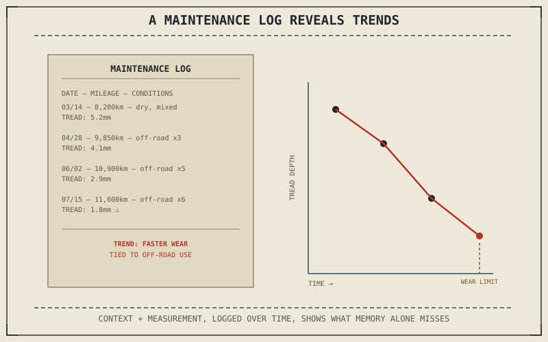

Nine chapters ago, Chapter 10.1 opened this part by arguing that maintenance items are rarely independent and that service frequency should track actual riding conditions, not a generic calendar. A personal maintenance log is the practical tool that makes both of those principles usable in practice, rather than remaining abstract advice — it's where connected system knowledge and condition-based scheduling actually get recorded and acted on.
Recording Enough to See the Connections Chapter 10.1 Described
A useful maintenance log records more than just what was done and when — it captures the riding context around each entry: distance covered, conditions faced, and anything noticed at the time, from Chapter 9.13's off-road terrain to Chapter 9.11's rain exposure. This is what actually makes Chapter 10.1's connected-systems argument usable: a log showing chain adjustments happening unusually often alongside entries noting predominantly off-road riding directly confirms Chapter 10.1's point that maintenance frequency should track real conditions, in a way a rider's memory alone rarely holds onto precisely enough to act on.
Tracking Condition-Based Items Alongside Interval-Based Ones
Chapter 10.5's tread depth measurements, Chapter 10.6's disc thickness checks, and Chapter 10.9's fuel and battery condition during storage are all genuinely different in kind from Chapter 10.3's oil change interval — they're measured quantities that degrade at a rate depending on use and conditions, not a fixed distance or time. A log that records these measurements over successive checks, not just a pass or fail at each individual inspection, lets a rider actually see a trend developing — tread depth or disc thickness declining faster than expected — well before that trend reaches a genuinely urgent point.
A maintenance log's real value isn't remembering what was done — it's making Chapter 10.1's argument visible: that a chain needing attention more often than expected, or a tread wearing faster than usual, are themselves data connecting back to the specific conditions a rider has actually been riding in.

A sample maintenance log page showing entries with date, mileage, riding conditions, and a measured quantity like tread depth plotted across several entries to reveal a wear trend developing over time.
A Common Misconception, Cleared Up Early
It's easy to treat a maintenance log as a compliance record, something kept mainly to prove service history to a future buyer or satisfy a warranty requirement. Its actual value, argued throughout this part, is diagnostic and predictive: a well-kept log reveals patterns — accelerated wear tied to specific conditions, a component needing attention more frequently than the schedule assumes — that a memory-based approach to maintenance simply cannot surface reliably, regardless of how conscientious a rider is about performing each individual task.
Where This Leads
Part X is complete. This book has now covered every hardware system, the physics underneath them, how a rider applies both, and how to keep the machine itself in the condition all of that assumes. Even careful maintenance eventually meets a problem that needs actual diagnosis rather than routine service. Part XI opens with exactly that: thinking like a mechanic — symptom, cause, test, confirm, repair — across every major system this book has described.
Key Concepts to Remember
- A useful maintenance log records riding context alongside each entry, making Chapter 10.1's condition-based scheduling principle actually usable.
- Recording measured quantities across successive checks reveals wear trends developing, rather than only a pass-or-fail result at each individual inspection.
- Part X is complete; Part XI turns to diagnosis and repair, for problems that need more than routine, scheduled service to resolve.
Cross-References
| ← Ch. 10.1 | Established maintenance as a connected system with condition-based frequency; this chapter shows a log as the practical tool making both principles usable. |
| ← Ch. 10.5 | Established tread depth as a measured quantity to track; this chapter shows logging that measurement across visits to reveal a developing trend. |
| → Ch. 11.1 | Opens Part XI with diagnosis and repair — thinking like a mechanic across every major system. |